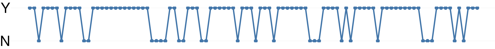

16 Populations & exchangeability
To solve any inference problem, or to design an AI agent for solving an inference problem, all we have to do in principle is to repeatedly use the fundamental laws of inference of § 7.4.
In many cases an in-principle application of the inference laws is computationally impossible, however. Approximate calculations and premises are then used, sometimes quite drastic. The approximation used depends on the nature of the inference problem. This is why inference problems are often classified in one way or another, and different solution recipes are presented for the different classes.
For a data-science engineer it is important to keep in mind that these recipes are only approximations, and to keep the principled solution always in sight. Technological advances continually allow us to make computations that were previously impossible – think of “quantum computers” these days. A truly optimal in-principle solution, preferable to a sub-optimal approximation, can suddenly become accessible – to those who know it.
We shall now introduce a very rough distinction between two very broad classes of inference problems, and then study the principled solution of one of them, and approximations to this solution.
16.1 Exchangeable vs non-exchangeable inferences
Intuitive understanding
Consider these sketches of two inference problems:
- Stock exchange
- In 100 days, the daily change in closing price of a stock has been positive 74 times, and negative 26 times, according a particular sequence. For instance, the data could be:

In which of the subsequent 3 days will the closing-price change be positive, and in which negative?

- Mars prospecting
- Of the last 100 similar-sized rocks examined in a large crater on Mars, 74 contained hematite, and 26 didn’t. For instance, the data could be:

where “Y” and “N” denote the presence and absence of hematite.
Which, among the next 3 rocks that will be examined, will contain hematite, and which will be hematite-free?

The two inference problems differ in some aspects and are similar in others. Time, for example, appears to be an important aspect of the first inference, which is in fact often categorized as a “time-series analysis”. But the second inference involves or could involve time as well: the rocks could be inspected sequentially. So more precisely it is the time ordering that is more relevant in the first inference than the second.
An important difference between the two inference problems is revealed by the following thought-experiments. Consider how you would answer in the stock-exchange case and in the Mars-prospecting case:
It turns out that there was an error in the sequence of positive and negative datapoints, although not in the total amounts of positive and negative ones. In the stock-exchange inference, for instance, days 1 (\(-\)) and 3 (\(+\)) were erroneously swapped, as were days 100 (\(+\)) and 85 (\(-\)), and many other days; in the Mars-prospecting inference, rocks #1 (Y) and #3 (N) were erroneously swapped, as were rocks #100 (Y) and #97 (N), and many other rocks.
Should the final inference about the next 3 datapoints be changed?
The information about the exact sequence of data is lost, and only the total amount of positive and negative datapoints is preserved (74 vs 26).
Would the final inference about the next 3 datapoints be different, compared to the situation where the exact data sequence is known?
A new inference is requested: not about the 3 datapoints following the known data, but the 3 datapoints preceding the known data: the day before day 1 and so on, or the rock before rock #1 and so on. (Or, generalizing: an inference about 3 datapoints interspersed among the known ones is requested.)
Would the inference for the preceding 3 datapoints be different from the original one about the subsequent 3 datapoints?
In all these thought-experiments, our intuition is that the inference for the stock-exchange problem would be different, but the one for the Mars-prospecting problem would stay the same or not change appreciably. Swapping days in a stock course, matters; swapping rocks in a crater, doesn’t. There are good reasons, based on physics and dynamical-system theory, for this intuition.
An inference which does not change if data and unknown quantities are freely reordered, like the Mars-prospecting one, is called exchangeable. Whereas an inference in which the ordering of data and unknowns is relevant, like the stock-exchange one, is called non-exchangeable. There is not a dichotomy between the two cases; rather, there are continuous varying degrees of exchangeability or non-exchangeability. But for the moment we shall simplify this gradation into a binary distinction.
We shall now make this definition more precise, and then study and exploit the remarkable consequences that it has for an agent’s inferences and probability calculations.
Formal definition
Consider a collection of quantities \(X_1, X_2, X_3, \dotsc\)$, all having identical domains. For instance, they could all be continuous with values in the real numbers; or all binary, with values \(\{\text{\small Yes}, \text{\small No}\}\); or all ordinal, with values \(\{\text{\small low}, \text{\small medium}, \text{\small high}\}\); or all join quantities, with the same join domains.
An agent has a joint probability distribution over them, conditional on some state of knowledge \(\mathsfit{I}\):
\[ \mathrm{P}(X_1\mathord{\mkern 1.5mu\textrm{\small=}\mkern 1.5mu}x_1,\ X_2\mathord{\mkern 1.5mu\textrm{\small=}\mkern 1.5mu}x_2,\ X_3\mathord{\mkern 1.5mu\textrm{\small=}\mkern 1.5mu}x_3,\ \dotso \nonscript\:\vert\nonscript\:\mathopen{} \mathsfit{I}) \]
for all combinations of values \(x_1, x_2, x_3, \dotsc\)
This joint probability distribution is called exchangeable if all marginal probabilities (§ 10.1) for any sub-collection of quantities remain the same whenever the values are swapped. For example:
\[ \begin{aligned} & \mathrm{P}(X_1 \mathord{\mkern 1.5mu\textrm{\small=}\mkern 1.5mu}{\color[RGB]{34,136,51}a},\ X_2\mathord{\mkern 1.5mu\textrm{\small=}\mkern 1.5mu}{\color[RGB]{102,204,238}b}\nonscript\:\vert\nonscript\:\mathopen{} \mathsfit{I}) \\[1ex] {}={}& \mathrm{P}(X_1 \mathord{\mkern 1.5mu\textrm{\small=}\mkern 1.5mu}{\color[RGB]{102,204,238}b},\ X_2\mathord{\mkern 1.5mu\textrm{\small=}\mkern 1.5mu}{\color[RGB]{34,136,51}a}\nonscript\:\vert\nonscript\:\mathopen{} \mathsfit{I}) \end{aligned} \qquad\text{\small and}\qquad \begin{aligned} & \mathrm{P}(X_5 \mathord{\mkern 1.5mu\textrm{\small=}\mkern 1.5mu}{\color[RGB]{204,187,68}c},\ X_{11}\mathord{\mkern 1.5mu\textrm{\small=}\mkern 1.5mu}{\color[RGB]{170,51,119}d}\nonscript\:\vert\nonscript\:\mathopen{} \mathsfit{I}) \\[1ex] {}={}& \mathrm{P}(X_5 \mathord{\mkern 1.5mu\textrm{\small=}\mkern 1.5mu}{\color[RGB]{170,51,119}d},\ X_{11}\mathord{\mkern 1.5mu\textrm{\small=}\mkern 1.5mu}{\color[RGB]{204,187,68}c}\nonscript\:\vert\nonscript\:\mathopen{} \mathsfit{I}) \end{aligned} \]
and also
\[ \begin{aligned} & \mathrm{P}(X_1 \mathord{\mkern 1.5mu\textrm{\small=}\mkern 1.5mu}{\color[RGB]{34,136,51}a},\ X_2\mathord{\mkern 1.5mu\textrm{\small=}\mkern 1.5mu}{\color[RGB]{102,204,238}b},\ X_3\mathord{\mkern 1.5mu\textrm{\small=}\mkern 1.5mu}{\color[RGB]{204,187,68}c}\nonscript\:\vert\nonscript\:\mathopen{} \mathsfit{I}) \\[1ex] {}={}& \mathrm{P}(X_1 \mathord{\mkern 1.5mu\textrm{\small=}\mkern 1.5mu}{\color[RGB]{34,136,51}a},\ X_2\mathord{\mkern 1.5mu\textrm{\small=}\mkern 1.5mu}{\color[RGB]{204,187,68}c},\ X_3\mathord{\mkern 1.5mu\textrm{\small=}\mkern 1.5mu}{\color[RGB]{102,204,238}b}\nonscript\:\vert\nonscript\:\mathopen{} \mathsfit{I}) \\[1ex] {}={}& \mathrm{P}(X_1 \mathord{\mkern 1.5mu\textrm{\small=}\mkern 1.5mu}{\color[RGB]{102,204,238}b},\ X_2\mathord{\mkern 1.5mu\textrm{\small=}\mkern 1.5mu}{\color[RGB]{34,136,51}a},\ X_3\mathord{\mkern 1.5mu\textrm{\small=}\mkern 1.5mu}{\color[RGB]{102,204,238}b}\nonscript\:\vert\nonscript\:\mathopen{} \mathsfit{I}) \\[1ex] {}={}& \mathrm{P}(X_1 \mathord{\mkern 1.5mu\textrm{\small=}\mkern 1.5mu}{\color[RGB]{204,187,68}c},\ X_2\mathord{\mkern 1.5mu\textrm{\small=}\mkern 1.5mu}{\color[RGB]{102,204,238}b},\ X_3\mathord{\mkern 1.5mu\textrm{\small=}\mkern 1.5mu}{\color[RGB]{34,136,51}a}\nonscript\:\vert\nonscript\:\mathopen{} \mathsfit{I}) \\[1ex] {}={}& \mathrm{P}(X_1 \mathord{\mkern 1.5mu\textrm{\small=}\mkern 1.5mu}{\color[RGB]{204,187,68}c},\ X_2\mathord{\mkern 1.5mu\textrm{\small=}\mkern 1.5mu}{\color[RGB]{102,204,238}b},\ X_3\mathord{\mkern 1.5mu\textrm{\small=}\mkern 1.5mu}{\color[RGB]{34,136,51}a}\nonscript\:\vert\nonscript\:\mathopen{} \mathsfit{I}) \\[1ex] {}={}& \mathrm{P}(X_1 \mathord{\mkern 1.5mu\textrm{\small=}\mkern 1.5mu}{\color[RGB]{204,187,68}c},\ X_2\mathord{\mkern 1.5mu\textrm{\small=}\mkern 1.5mu}{\color[RGB]{34,136,51}a},\ X_3\mathord{\mkern 1.5mu\textrm{\small=}\mkern 1.5mu}{\color[RGB]{102,204,238}b}\nonscript\:\vert\nonscript\:\mathopen{} \mathsfit{I}) \end{aligned} \qquad\text{\small and}\qquad \begin{aligned} & \mathrm{P}(X_5 \mathord{\mkern 1.5mu\textrm{\small=}\mkern 1.5mu}{\color[RGB]{34,136,51}a},\ X_{11}\mathord{\mkern 1.5mu\textrm{\small=}\mkern 1.5mu}{\color[RGB]{102,204,238}b},\ X_{37}\mathord{\mkern 1.5mu\textrm{\small=}\mkern 1.5mu}{\color[RGB]{204,187,68}c}\nonscript\:\vert\nonscript\:\mathopen{} \mathsfit{I}) \\[1ex] {}={}& \mathrm{P}(X_5 \mathord{\mkern 1.5mu\textrm{\small=}\mkern 1.5mu}{\color[RGB]{34,136,51}a},\ X_{11}\mathord{\mkern 1.5mu\textrm{\small=}\mkern 1.5mu}{\color[RGB]{204,187,68}c},\ X_{37}\mathord{\mkern 1.5mu\textrm{\small=}\mkern 1.5mu}{\color[RGB]{102,204,238}b}\nonscript\:\vert\nonscript\:\mathopen{} \mathsfit{I}) \\[1ex] {}={}& \mathrm{P}(X_5 \mathord{\mkern 1.5mu\textrm{\small=}\mkern 1.5mu}{\color[RGB]{102,204,238}b},\ X_{11}\mathord{\mkern 1.5mu\textrm{\small=}\mkern 1.5mu}{\color[RGB]{34,136,51}a},\ X_{37}\mathord{\mkern 1.5mu\textrm{\small=}\mkern 1.5mu}{\color[RGB]{102,204,238}b}\nonscript\:\vert\nonscript\:\mathopen{} \mathsfit{I}) \\[1ex] {}={}& \mathrm{P}(X_5 \mathord{\mkern 1.5mu\textrm{\small=}\mkern 1.5mu}{\color[RGB]{204,187,68}c},\ X_{11}\mathord{\mkern 1.5mu\textrm{\small=}\mkern 1.5mu}{\color[RGB]{102,204,238}b},\ X_{37}\mathord{\mkern 1.5mu\textrm{\small=}\mkern 1.5mu}{\color[RGB]{34,136,51}a}\nonscript\:\vert\nonscript\:\mathopen{} \mathsfit{I}) \\[1ex] {}={}& \mathrm{P}(X_5 \mathord{\mkern 1.5mu\textrm{\small=}\mkern 1.5mu}{\color[RGB]{204,187,68}c},\ X_{11}\mathord{\mkern 1.5mu\textrm{\small=}\mkern 1.5mu}{\color[RGB]{102,204,238}b},\ X_{37}\mathord{\mkern 1.5mu\textrm{\small=}\mkern 1.5mu}{\color[RGB]{34,136,51}a}\nonscript\:\vert\nonscript\:\mathopen{} \mathsfit{I}) \\[1ex] {}={}& \mathrm{P}(X_5 \mathord{\mkern 1.5mu\textrm{\small=}\mkern 1.5mu}{\color[RGB]{204,187,68}c},\ X_{11}\mathord{\mkern 1.5mu\textrm{\small=}\mkern 1.5mu}{\color[RGB]{34,136,51}a},\ X_{37}\mathord{\mkern 1.5mu\textrm{\small=}\mkern 1.5mu}{\color[RGB]{102,204,238}b}\nonscript\:\vert\nonscript\:\mathopen{} \mathsfit{I}) \end{aligned} \]
and also
\[ \begin{aligned} & \mathrm{P}(X_1 \mathord{\mkern 1.5mu\textrm{\small=}\mkern 1.5mu}{\color[RGB]{34,136,51}a},\ X_2\mathord{\mkern 1.5mu\textrm{\small=}\mkern 1.5mu}{\color[RGB]{102,204,238}b},\ X_3\mathord{\mkern 1.5mu\textrm{\small=}\mkern 1.5mu}{\color[RGB]{204,187,68}c},\ X_4\mathord{\mkern 1.5mu\textrm{\small=}\mkern 1.5mu}{\color[RGB]{170,51,119}d}\nonscript\:\vert\nonscript\:\mathopen{} \mathsfit{I}) \\[1ex] {}={}& \mathrm{P}(X_1 \mathord{\mkern 1.5mu\textrm{\small=}\mkern 1.5mu}{\color[RGB]{204,187,68}c},\ X_2\mathord{\mkern 1.5mu\textrm{\small=}\mkern 1.5mu}{\color[RGB]{34,136,51}a},\ X_3\mathord{\mkern 1.5mu\textrm{\small=}\mkern 1.5mu}{\color[RGB]{170,51,119}d},\ X_4\mathord{\mkern 1.5mu\textrm{\small=}\mkern 1.5mu}{\color[RGB]{102,204,238}b}\nonscript\:\vert\nonscript\:\mathopen{} \mathsfit{I}) \\[1ex] {}={}& \mathrm{P}(X_1 \mathord{\mkern 1.5mu\textrm{\small=}\mkern 1.5mu}{\color[RGB]{170,51,119}d},\ X_2\mathord{\mkern 1.5mu\textrm{\small=}\mkern 1.5mu}{\color[RGB]{204,187,68}c},\ X_3\mathord{\mkern 1.5mu\textrm{\small=}\mkern 1.5mu}{\color[RGB]{102,204,238}b},\ X_4\mathord{\mkern 1.5mu\textrm{\small=}\mkern 1.5mu}{\color[RGB]{34,136,51}a}\nonscript\:\vert\nonscript\:\mathopen{} \mathsfit{I}) \\[1ex] {}={}&\dotso \end{aligned} \]
and so on, no matter how many and which quantities we take, and no matter what the values \({\color[RGB]{34,136,51}a},{\color[RGB]{102,204,238}b},{\color[RGB]{204,187,68}c},{\color[RGB]{170,51,119}d}\dotsc\) might be.
Note that the commas just stand for the and operation, so thanks to the commutativity of Boolean algebra (§ 7.7.1) we could equivalently write \[
\begin{aligned}
&
\mathrm{P}(X_1 \mathord{\mkern 1.5mu\textrm{\small=}\mkern 1.5mu}{\color[RGB]{34,136,51}a},\ X_2\mathord{\mkern 1.5mu\textrm{\small=}\mkern 1.5mu}{\color[RGB]{102,204,238}b}\nonscript\:\vert\nonscript\:\mathopen{} \mathsfit{I})
\\[1ex] {}={}&
\mathrm{P}(X_{\underbracket[0ex]{2}_{\uparrow}} \mathord{\mkern 1.5mu\textrm{\small=}\mkern 1.5mu}{\color[RGB]{34,136,51}a},\ X_{\underbracket[0ex]{1}_{\uparrow}}\mathord{\mkern 1.5mu\textrm{\small=}\mkern 1.5mu}{\color[RGB]{102,204,238}b}\nonscript\:\vert\nonscript\:\mathopen{} \mathsfit{I})
\end{aligned}
\] and so on, where the quantities look swapped rather than the values.
This definition means that exchangeability is true for all marginal distributions
In the case of the inference problem about the fund value, the exchanged inference seems much easier. We expect known fund values closer to the unknown one to be more informative. In the case of the inference problem about the failure status, the exchanged inference might be slightly easier, but still roughly on the same level of difficulty and the original one.
An inference which remains basically the same if a quantity in the proposal is exchanged with a quantity in the conditional is called exchangeable.
Our focus, however, is not on the whys of this intuition, but on the consequences that it has for inference and probability calculations.